Narashino, Chiba: things to do, food and stays
Narashino · Chiba
Narashino
Highlighted on the Chiba map.
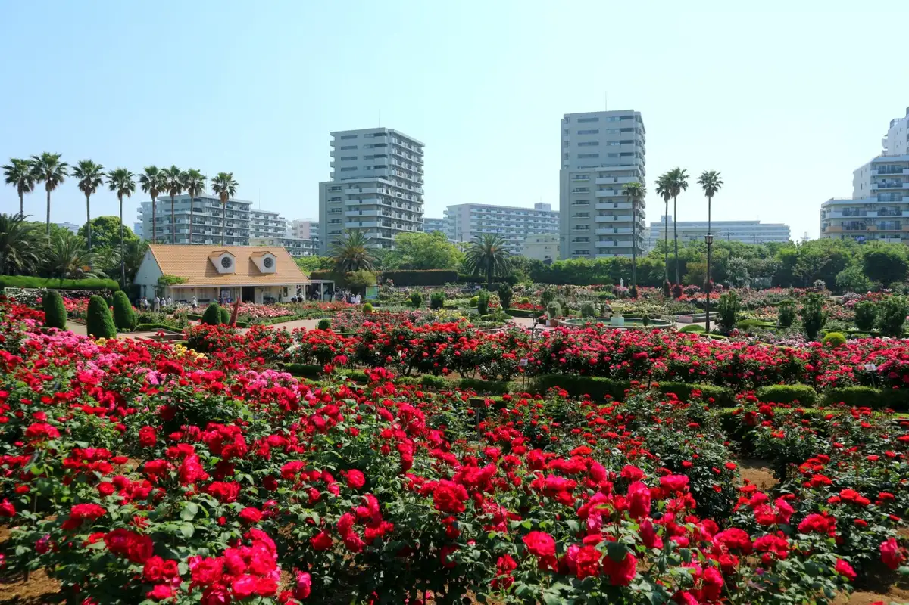
Stay
JR東日本ホテルメッツ 津田沼
JR Higashinihon Hotel Mettsu Tsudanuma
ベッセルイン京成津田沼駅前
Besseruin Keisei Tsudanumaeki Mae
トーセイホテル&セミナ－幕張
Tosei Hotel & Semina - Makuhari
Hotel in Akanehama, Narashino; 2-minute walk from Shinnarashino Station.
トーセイホテル＆セミナー幕張
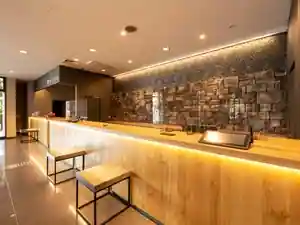
Tosei Hotel & Semina Makuhari
Dining
ル・パティシエ ヨコヤマ 谷津店
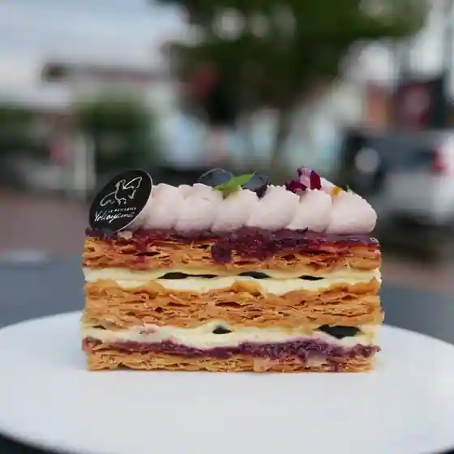
Ru Pateishie Yokoyama Yatsu
ル・パティシエ ヨコヤマ 京成大久保店
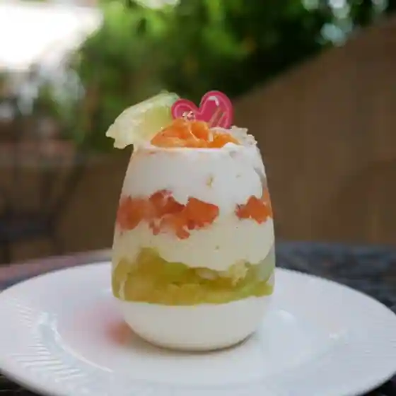
Ru Pateishie Yokoyama Keisei Okubo
ラーメンかいざん
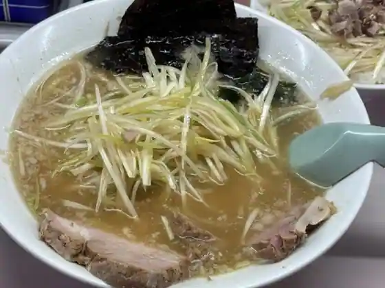
Ramen Kaizan
ramen case-K
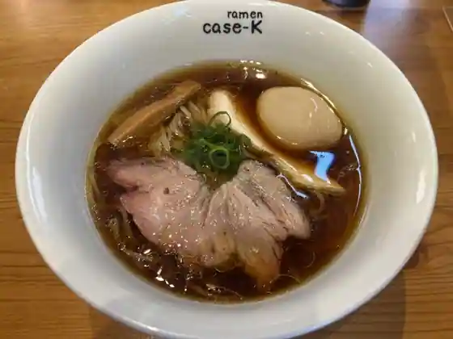
ramen case-K
プティ ラシェット
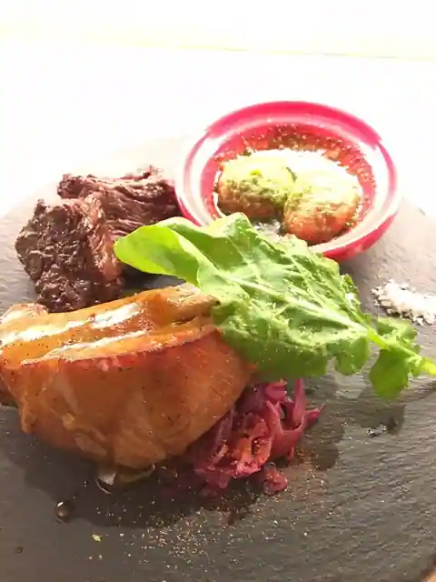
Putei Rashietto
ラシェット M
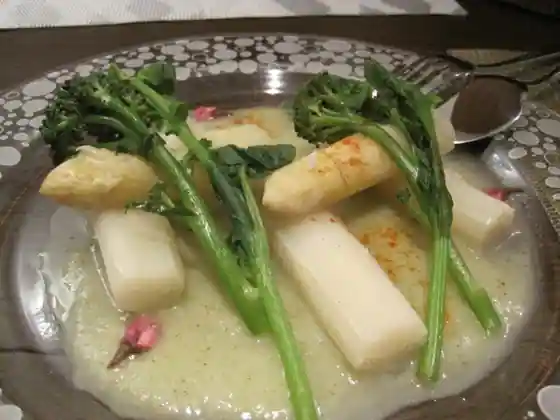
Rashietto M
栄昇らーめん
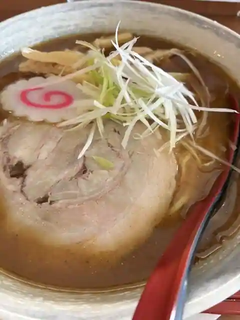
Eisho Ramen
マンドリン ハンバーガーキッチン
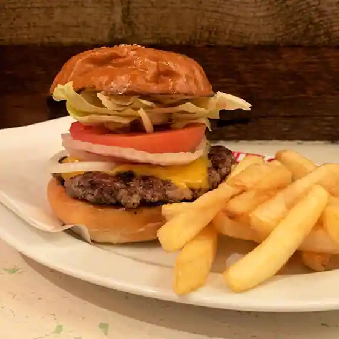
Mandorin Han Burger Kitchen
太郎飯店
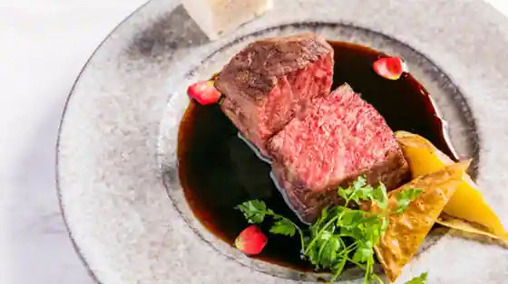
Taro Meshi
栄昇らーめん 匠
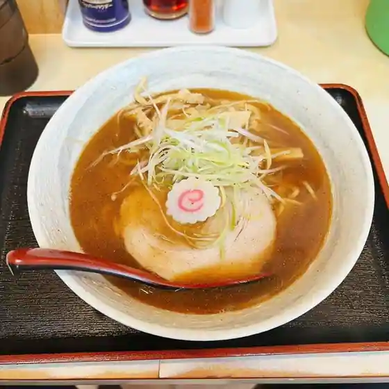
Eisho Ramen Takumi
房総式ラーメン 人力船
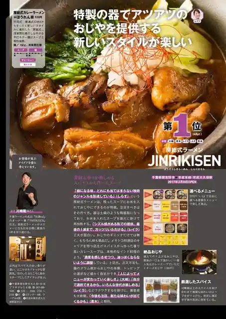
Boso Shiki Ramen Jinriki Fune
ミスターとフライパン
Misuta To Furai Bakery
必勝軒
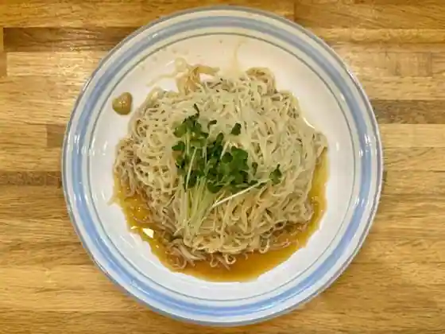
Hissho Ken
どろそば屋 ひろし
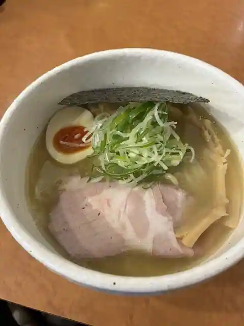
Dorosoba Ya Hiroshi
あけぼの
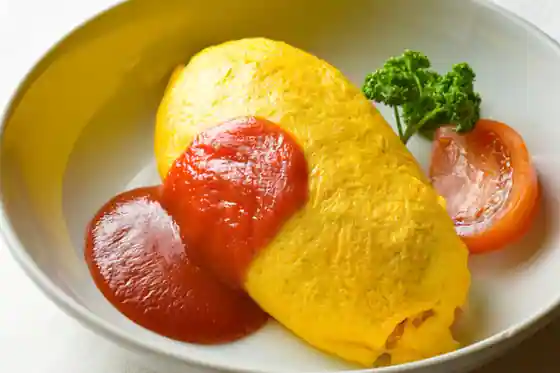
Akebono
ブラウンサウンドコーヒー
Buraunsaundo Coffee
パンケ 京成大久保店
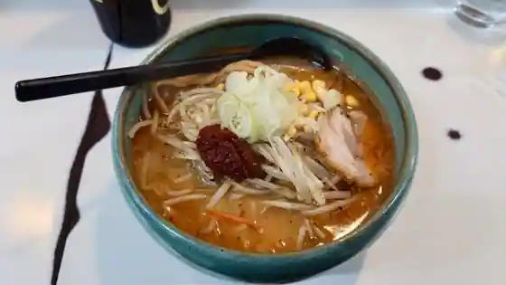
Bakery Ke Keisei Okubo
フィロコフィア プラッツ習志野店
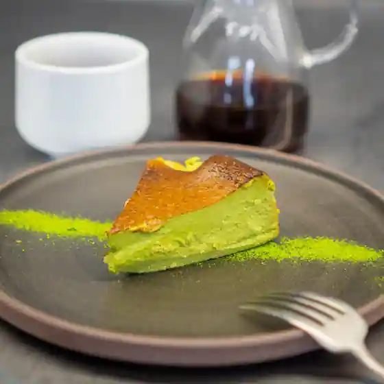
Firokofia Purattsu Narashino
大衆酒場 西もり
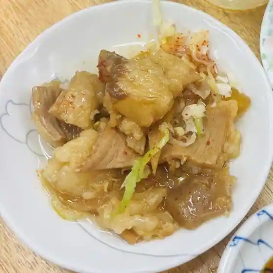
Taishu Sakaba Nishi Mori
麺屋 時茂 京成大久保店
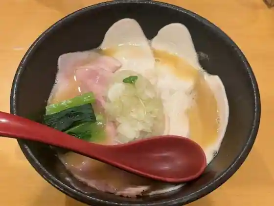
Men Ya Tokimochi Keisei Okubo
限界を超えろ 津田沼校
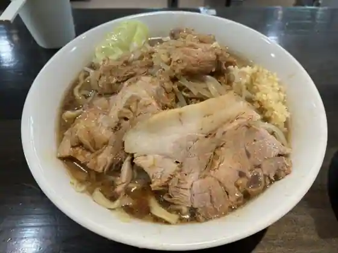
Genkai Wo Koe Ro Tsudanuma Ko
cafe 螢明舎 谷津店
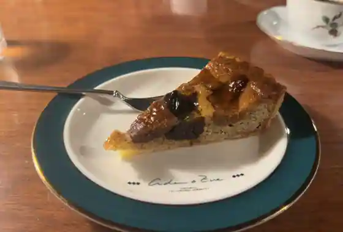
cafe Hotaru Mei Sha Yatsu
ならしのクラフトビール むぎのいえ
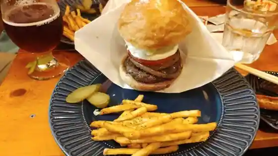
Narashino Kurafuto Beer Muginoie
CURRY&SPACE e-two
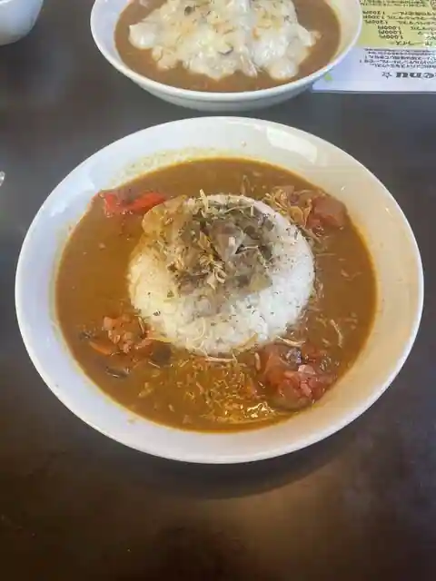
CURRY&SPACE e-two
Sights
Yatsu Bara Sono
Akane Hama Ryokuchi (Kanto Fujimi Hyakkei)
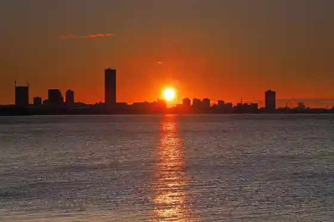
Chibaken Kokusai Sogo Suiei Ba
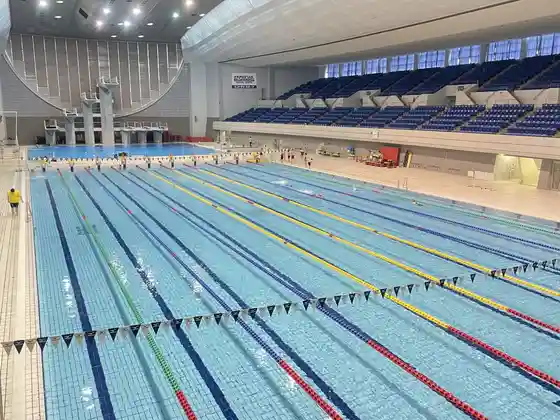
Kisetsu no Hana (Aki Bara) / Narashino Yatsu Bara Sono
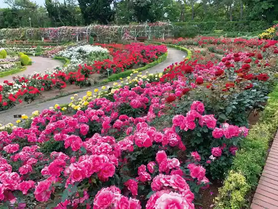
Yatsu Higata Shizenkansatsu Center
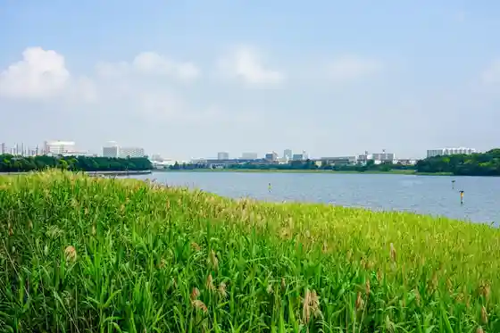
Kisetsu no Hana (Bara) / Yatsu Bara Sono
JA Chiba Mirai Nosambutsu Chokubai Tokoro Shoika Go Narashino Mise
Kyu Tokita Ie House
Kyu Osawa Ie House
JA Chiba Mirai Nosambutsu Chokubai Tokoro Shoika Go Tsudanuma Mise
Tamagoya Toyomaru Ionmoru Tsudanuma Mise